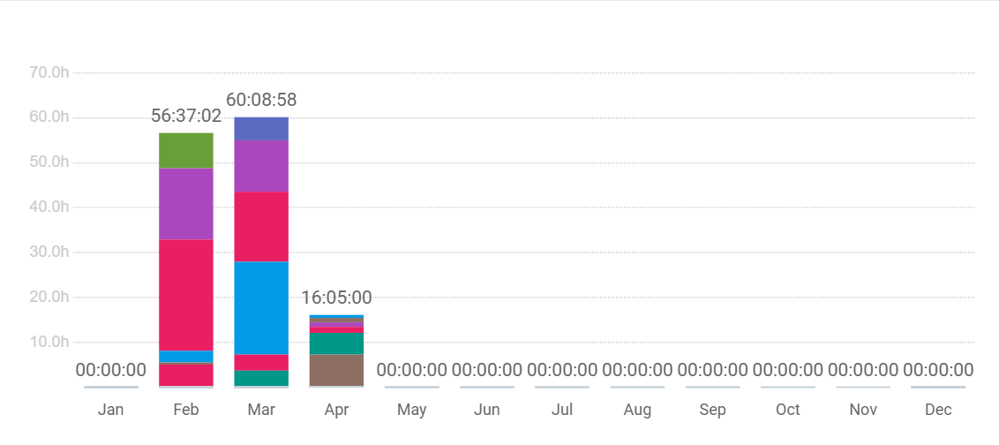
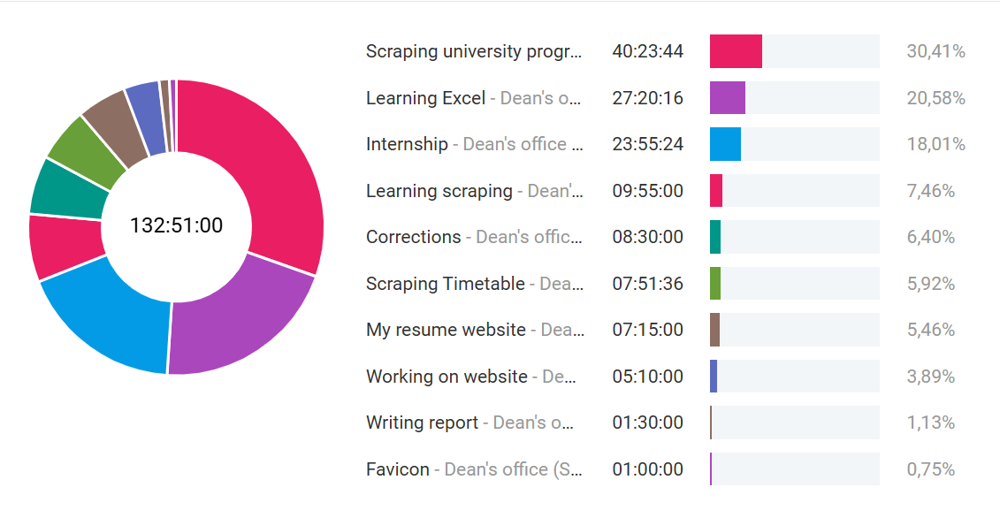
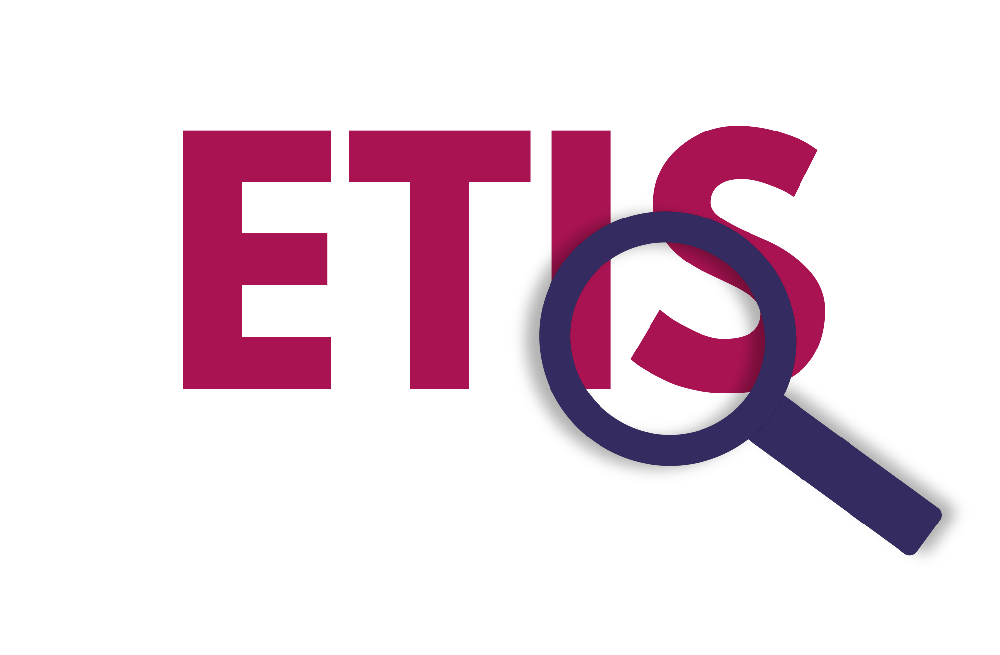
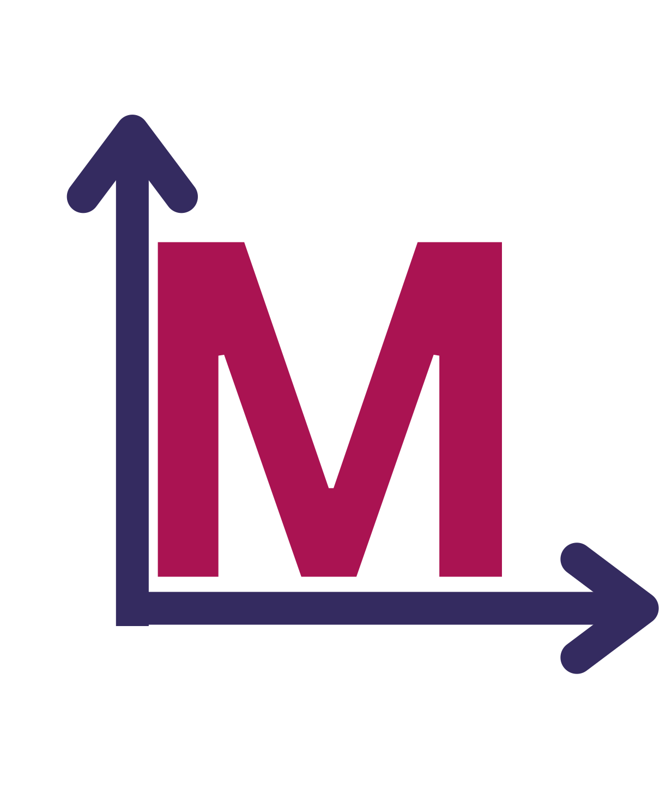
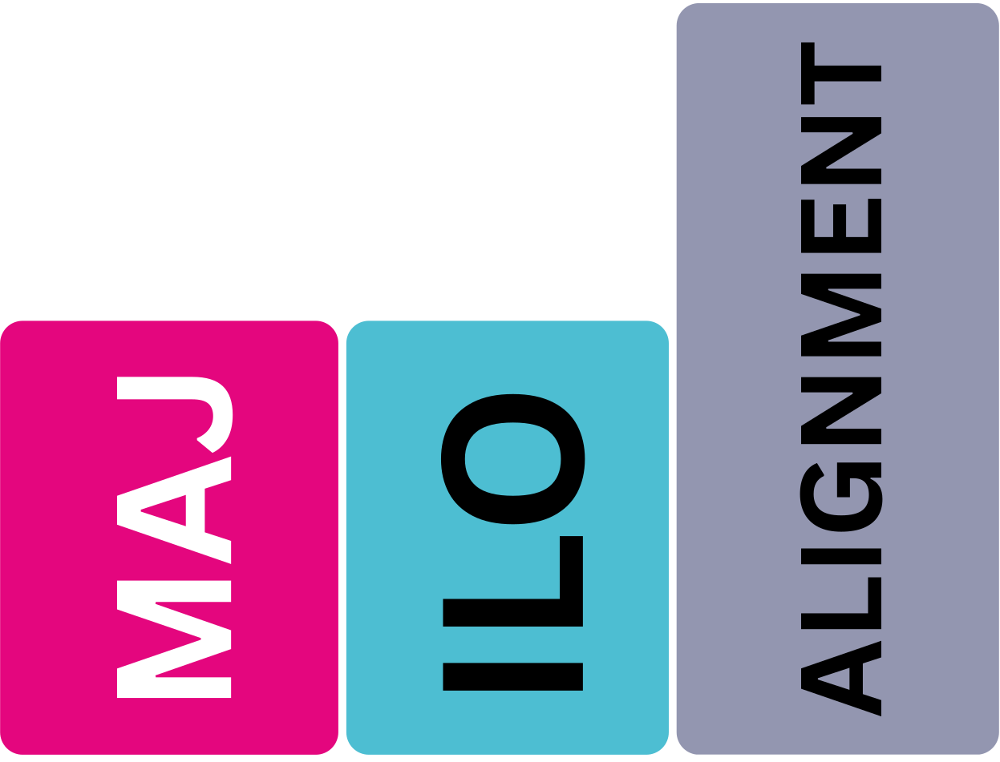
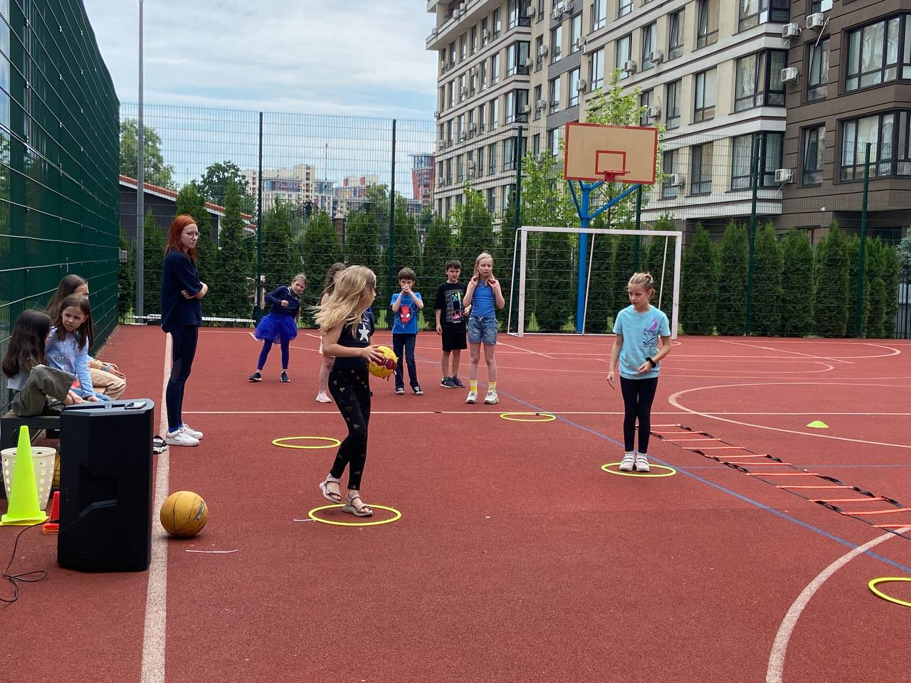
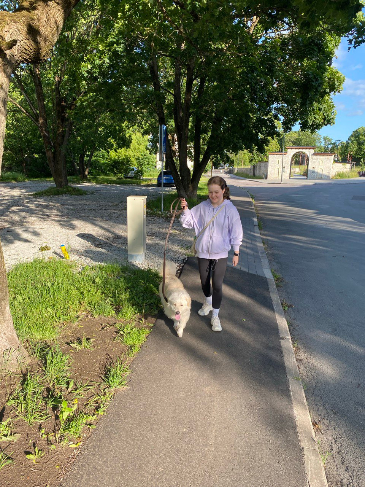

Who am I?
Hi! My name is Anastasiia Neizhko and I am 18 years old. I am currently a Business & Administration student in TalTech university and a very active participant in volunteering and different activities. Also, I am quite observant to details and like to develop and learn more as I get a chance. I would like to share my skills and experience with you.
Internship
TalTech University, Marketing Department
Projects
“Maj_konkurendid”: A comprehensive website featuring scraped and analyzed information about competitor universities, complete with interactive filtered tables and data visualizations.
Gained Skills
GitHub, Visual Studio, Scraping, Advanced Excel, Vibe Coding, Favicon CreationInternship Progress & Assets





Education
TalTech University
2025 - PresentFirst year Business Administration student in Tallinn University of Technology.
Visit WebsiteCDE European Collegium
Graduated 2025Completed secondary education with strong academic results.
Visit WebsiteMy CV
About Me
Punctual, can handle any challenges well, positive, interested in various topics, have great communication skills, and fast learner.
Education
- Graduated high school
- First year Business Administration student in Tallinn University of Technology
Work Experience
- Counselor at a children's camp
- Dog sitter
- Volunteering (data research, mentoring, activism, teamwork)
Additional Info
Experienced in Canva, PowerPoint, and advanced writing. Actively involved in social projects and youth camps.
Skills & Languages
Hard Skills
Vibe Coding, Canva Design, PowerPoint, Excel, Advanced WritingSoft Skills
Languages
Activities
Teenergizer
Volunteer and mentor for sex education and mental health training in Ukraine.
HIV Awareness
Created "HIV Awareness/Art exhibition" with "Human Rights Center" in Estonia.
Work Experience
Counselor at a children's camp
Responsible for the safety, well-being, and entertainment of children.

Dog sitter
Caring for pets and ensuring they are happy and healthy while their owners are away.
